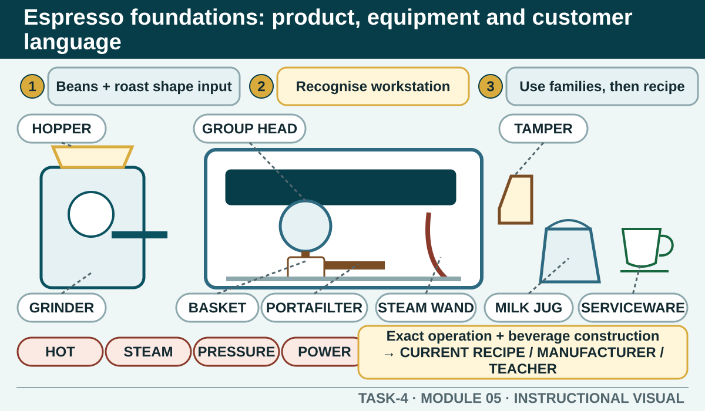

Prior learning
Recall the previous lesson and bring forward one question or completed learning artefact.
Task 4 · Lesson 5 of 8
Build the vocabulary and product knowledge needed to understand espresso orders, recognise workstation components and use the current recipe and equipment instructions responsibly.
Prior learning
Recall the previous lesson and bring forward one question or completed learning artefact.
Success criteria
Learning boundary
This lesson supports preparation and formative practice. The current authorised package and trainer/assessor control formal products, observations, dates and submission.
The authorised teacher terminology identifies Arabica and Robusta as major commercial coffee species. A blend may combine coffees to create a target balance of aroma, body, flavour and consistency. Roasting applies heat to green beans and develops the characteristics used in the final beverage.
These labels do not predict the exact taste by themselves. Origin, blend, roast, freshness, storage, grind and preparation all influence the cup. Use the current product information when advising a customer and avoid claiming that one species or roast will taste the same in every blend.
The grinder prepares coffee for the current recipe. The hopper holds beans as permitted by the workplace. The group head is the machine connection for extraction; the group handle or portafilter carries the filter basket; the basket holds the prepared coffee; the tamper supports an even, level coffee bed; the steam wand is used in the authorised milk-texturing process; and the milk jug and serviceware are selected for the order.
Recognition is not permission to operate, adjust or clean equipment. Commercial machines involve heat, steam, pressure, electricity and moving components. Exact preparation, use, cleaning and fault controls come from teacher demonstration, manufacturer instructions and the workplace procedure.
Espresso beverage names help organise product knowledge. Some beverages are served primarily as espresso and water; others combine espresso with textured milk, foam, chocolate or other authorised components. The family helps a worker ask useful questions and locate the correct recipe.
Names can be interpreted differently between workplaces. Cup choice, dose, yield, water, milk, texture, garnish and presentation are controlled by the current local recipe card. When a customer uses a name differently or asks for a variation, clarify the expected product rather than arguing from a generic definition.
Relevant customer choices may include the current beverage type, bean or blend option, strength, milk, sweetener, accompaniment and serviceware where the menu allows them. Ask what matters to the customer, describe verified options and confirm the final order.
Milk and added products can have different ingredients, characteristics and handling requirements. Follow current ingredient and allergen information. Do not describe a milk as suitable, interchangeable or prepared without cross-contact unless the authorised source and procedure support that claim.
Coffee mise en place places ingredients, equipment and serviceware where work can flow safely. Check the current menu and recipe cards, bean supply, milk options, clean cups, jugs, cloth system, waste controls and the condition of the machine and grinder as directed.
Ingredients must remain in the correct containers and conditions to protect freshness and identification. Keep milk options and food-contact items controlled through the local procedure. Avoid overfilling the station or opening more stock than the planned service needs.
Espresso work combines customer communication with hot surfaces, steam, pressure, electricity, repetitive movement and food hygiene. Safe work means using the demonstrated position and sequence, keeping the station organised, protecting food-contact surfaces and communicating before reaching into another worker's active area.
A worker should recognise abnormal noise, leaks, damage, unexpected machine behaviour, unsafe cords or controls and a result outside the current standard. Do not open machine panels, improvise a repair or change unfamiliar settings. Stop or isolate as directed and refer complex faults to the responsible person or specialist.
Phone view: swipe across the diagram, or use Open larger below.


External media loads only after you choose it.
Source-linked video
Watch for: Identify the visible sequence from preparation to product check. Treat any settings as demonstration context, not as this course's authorised values.
Formative practice
Each option explains the workplace consequence. These responses save on this device.
Written application
Use the teacher-issued product card. Keep exact recipe values and machine controls out of the response.
Apply and keep evidence
Organise a clean, communication-rich espresso service without prescribing local machine settings.
Use the check result, activity record and written response as formative learning evidence only. Formal evidence remains controlled by the current package and trainer/assessor.
Next: Espresso workflow: confirm, prepare, extract, texture and serve.
Authorised source note: Coffee terminology, equipment roles, beverage families, customer preferences and mise en place are source-supported. Exact recipes, extraction values, settings, milk specifications and operating permissions remain local. Source references: TEACHER-COFFEE-TERMS, SUPPORTING-COFFEE, TGA-SITHFAB025, SITE-T4-V2.